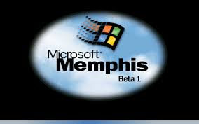
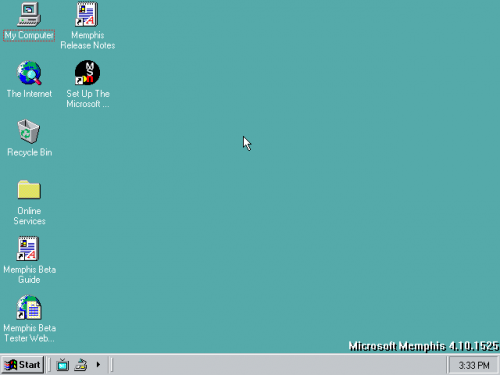

Стартовий екран Windows Memphis
1. ОСНОВНЕ
Microsoft Memphis була кодовою назвою для Windows 98, наступної версії операційної системи після
Windows 95. Розробка розпочалася в середині 1996 року, а перші бета-версії були випущені у 1997
році. Windows 98 була офіційно випущена 25 червня 1998 року.
Windows Memphis включала ряд нових функцій і поліпшень у порівнянні зі своїми попередниками. Одним
із
найбільш помітних нововведень стала підтримка нових технологій, таких як USB (Universal Serial Bus),
що дозволяло підключати та використовувати периферійні пристрої без необхідності перезавантаження
комп'ютера.
Іншою важливою особливістю була інтеграція Internet Explorer 4.0, який був тісно пов'язаний із
системою, що робило перегляд Інтернету простішим і швидшим. Крім того, функція Active Desktop
дозволяла користувачам встановлювати веб-сторінки прямо на робочий стіл, забезпечуючи швидкий доступ
до оновлюваної інформації.
Windows Memphis також мала покращений інтерфейс користувача з новими значками, темами і візуальними
ефектами, що робило систему більш привабливою і зручною для використання. Підтримка файлової системи
FAT32 дозволяла ефективніше використовувати дисковий простір і підтримувати розділи більші за 2 ГБ.
2. ІНТЕРФЕЙС
Інтерфейс Microsoft Memphis, який пізніше став Windows 98, був розроблений з урахуванням потреб
домашніх користувачів і малого бізнесу. Він поєднував у собі простоту та зручність користування з
деякими новими функціями, що значно покращили взаємодію користувачів з операційною системою.
Основні елементи інтерфейсу Windows Memphis були подібні до тих, що використовувалися в Windows 95.
Вони
включали робочий стіл з піктограмами програм і файлів, панель завдань для перегляду відкритих вікон
і запущених програм, а також Меню Пуск для доступу до програм і системних налаштувань. Водночас
Windows Memphis принесла кілька значних покращень і нововведень.
Одним із найпомітніших нововведень була функція Active Desktop, яка дозволяла користувачам
інтегрувати веб-вміст безпосередньо на робочий стіл, роблячи його більш динамічним і інтерактивним.
Це забезпечувало зручний доступ до оновлюваної інформації та інтернет-ресурсів.
Windows Memphis також мала оновлений веб-браузер Internet Explorer 4.0, який був тісно інтегрований
у
систему, що спрощувало доступ до Інтернету. Ця інтеграція зробила багато системних функцій
доступними через веб-інтерфейс.
Дизайн Windows Memphis був більш кольоровим і візуально привабливим порівняно з корпоративно
орієнтованим
дизайном Windows NT 4.0. Це робило інтерфейс більш дружнім і приємним для домашніх користувачів.
Водночас було збережено всі ключові елементи, до яких звикли користувачі Windows 95, що
забезпечувало легкий перехід на нову версію.
Інтерфейс Windows Memphis також забезпечував кращу підтримку мультимедіа, включаючи обробку звуку,
відео
та графіки, що робило її ідеальною для домашнього використання. Вона також мала поліпшену систему
налаштувань, яка робила керування комп'ютером більш інтуїтивно зрозумілим і доступним для
користувачів.

Інтерфейс Windows Memphis
Нажаль фото відсутнє :(
Компютор з Windows Memphis
3. Думка користувачів
Користувачі Microsoft Memphis, яка стала відомою як Windows 98, здебільшого мали позитивні враження
від цієї операційної системи. Вона отримала високу оцінку за ряд поліпшень і нових функцій, які
значно підвищили зручність використання та продуктивність.
Однією з найбільш схвальних відгуків користувачів було інтеграція Internet Explorer 4.0. Цей браузер
забезпечив легкий і швидкий доступ до Інтернету, що стало важливим нововведенням в епоху зростаючої
популярності веб-серфінгу. Користувачі відзначали зручність інтегрованого браузера та його вплив на
загальну функціональність системи.
Функція Active Desktop, яка дозволяла розміщувати веб-вміст безпосередньо на робочому столі, також
отримала позитивні відгуки. Користувачі цінували можливість швидкого доступу до оновлюваної
інформації та інтерактивних елементів, що робило їхній досвід роботи з комп’ютером більш динамічним
і сучасним.
Підтримка нових технологій, таких як USB, була ще одним аспектом, який користувачі високо оцінили.
Можливість підключення та використання різноманітних периферійних пристроїв без необхідності
перезавантаження комп'ютера значно спростила роботу з новими гаджетами та аксесуарами.
Користувачі також звертали увагу на стабільність та надійність Windows Memphis порівняно з її
попередницею, Windows 95. Система стала менш схильною до збоїв та аварій, що робило її більш
привабливою для домашнього використання і для малого бізнесу.
Однак були й деякі критичні зауваження. Деякі користувачі відзначали, що інтеграція браузера
Internet Explorer викликала певні проблеми з продуктивністю, особливо на старіших комп'ютерах. Крім
того, не всі функції Active Desktop використовувалися широко, і дехто вважав їх зайвими.
У цілому, користувачі Microsoft Memphis (Windows 98) мали переважно позитивні враження від цієї
операційної системи. Вона стала важливим кроком вперед у розвитку Windows, забезпечивши кращу
підтримку обладнання, покращену інтеграцію Інтернету і більш зручний інтерфейс, що зробило її однією
з найуспішніших версій Windows свого часу.